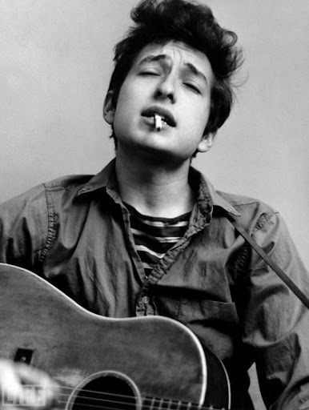
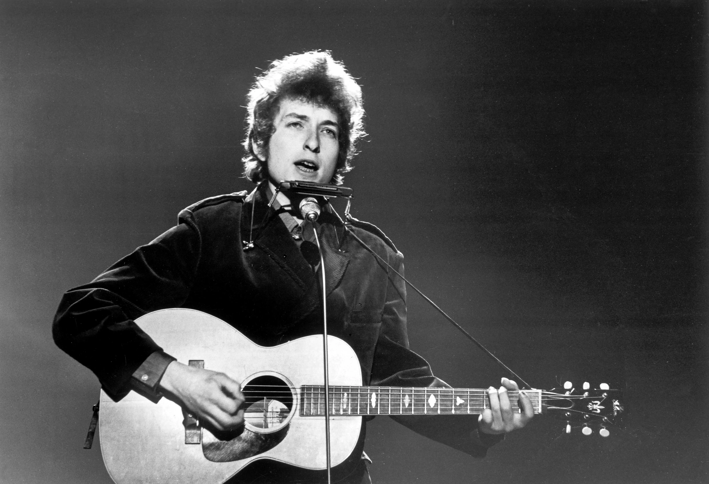
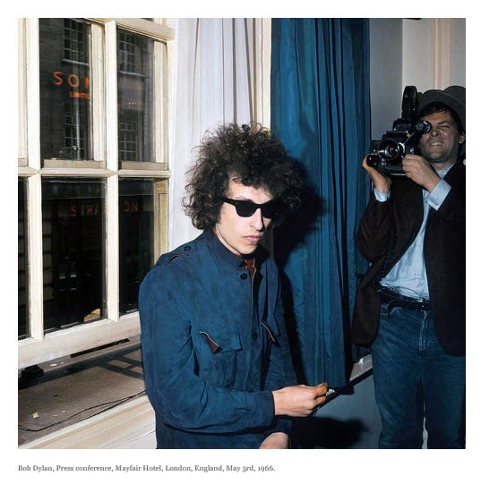
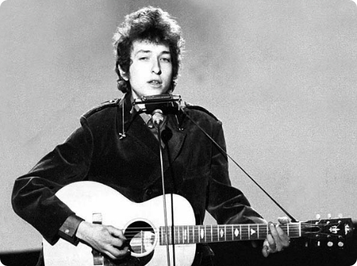

1960, America
Bob Dylan
Bob Dylan은 단지 가수가 아니었다. 그는 시대를 노래한 시인이었고,
혁명의 리듬을 만든 예언자였다.
혁명의 리듬을 만든 예언자였다.
1940년대 중반 미국 미네소타에서 태어난 그는 평범한 가정에서 자랐지만, 평범하게 살고 싶어 하진 않았다.
그는 우울한 포크기타를 들고 거리로 나섰고, 곧 세상의 가장 깊은 구석을 노래하기 시작했다.
그는 우울한 포크기타를 들고 거리로 나섰고, 곧 세상의 가장 깊은 구석을 노래하기 시작했다.
그는 흑인 민권 운동과 반전 시위, 젊은 세대의 분노와 질문을 노랫말 안에 집어넣었고,
사람들은 그를 '세대의 목소리'라 불렀다.
사람들은 그를 '세대의 목소리'라 불렀다.
하지만 딜런은 결코 하나의 진영에 머무르지 않았다.
그는 신념을 노래했지만, 그 신념조차 끊임없이 의심했고
대중의 기대를 거스르며 늘 새롭게 변신했다.
그는 신념을 노래했지만, 그 신념조차 끊임없이 의심했고
대중의 기대를 거스르며 늘 새롭게 변신했다.
Bob Dylan은 말과 침묵, 격정과 냉소, 신념과 회의 사이를 줄타기하듯 오가며 노래했다.
그래서 그의 음악은 이해하기 어렵지만, 이해하려는 노력 속에서 더욱 깊어진다.
그래서 그의 음악은 이해하기 어렵지만, 이해하려는 노력 속에서 더욱 깊어진다.
2016년, 그는 노벨문학상을 받았다. 가수로서 처음이자 유일한 수상이었다.
시도 아니고 소설도 아닌, ‘노래’가 문학이 될 수 있다는 사실을
그는 자신의 전 생애로 증명했다.
시도 아니고 소설도 아닌, ‘노래’가 문학이 될 수 있다는 사실을
그는 자신의 전 생애로 증명했다.

Why Censored?
“Chimes of Freedom”은 종소리처럼 맑고 아름다웠지만,
그 울림은 체제에게는 불편한 진동이었다.
그 울림은 체제에게는 불편한 진동이었다.
이 노래는 억압받는 사람들, 목소리를 잃은 사람들,
그리고 그 누구도 기억해주지 않는 존재들을 위한 헌사였다.
그들이 자유를 찾는 여정에 종소리가 함께하길 바라는 마음이었다.
그리고 그 누구도 기억해주지 않는 존재들을 위한 헌사였다.
그들이 자유를 찾는 여정에 종소리가 함께하길 바라는 마음이었다.
하지만 당시 미국은 베트남전이 막 시작되던 시기였고,
인종차별과 계층 분리가 일상처럼 존재하던 나라였다.
정치적 긴장은 높아졌고, 모든 ‘다른 목소리’는 의심의 대상이 되었다.
인종차별과 계층 분리가 일상처럼 존재하던 나라였다.
정치적 긴장은 높아졌고, 모든 ‘다른 목소리’는 의심의 대상이 되었다.
Bob Dylan의 가사는 시였고, 동시에 성명이었다.
그래서 더 위험했다. ‘자유를 위한 종소리’는 곧 ‘경고의 사이렌’으로
해석됐고, 일부 방송국은 이 노래를 금지하거나 회피했다.
그래서 더 위험했다. ‘자유를 위한 종소리’는 곧 ‘경고의 사이렌’으로
해석됐고, 일부 방송국은 이 노래를 금지하거나 회피했다.
특히 남부 지역의 라디오나 학교에서는 이 곡을 금기시했다.
이유는 명확했다—이 노래는 약자 편에 서 있었고,
그 약자들이 침묵하지 말라고 말하고 있었기 때문이다.
이유는 명확했다—이 노래는 약자 편에 서 있었고,
그 약자들이 침묵하지 말라고 말하고 있었기 때문이다.
검열의 이유는 늘 정치가 아니라고 말하지만,
정작 가장 먼저 지워지는 건 정치적인 노래들이다.
Bob Dylan의 이 곡은 그런 ‘불편한 진실’이었다.
정작 가장 먼저 지워지는 건 정치적인 노래들이다.
Bob Dylan의 이 곡은 그런 ‘불편한 진실’이었다.



Far between sundown’s finish and midnight’s broken toll
해 질 녘과 자정의 부서진 종소리 사이 어딘가
We ducked inside the doorway, thunder crashing
우리는 천둥 소리에 놀라 문 안으로 몸을 숨겼죠
As majestic bells of bolts struck shadows in the sounds
장엄한 번개의 종소리가 소리 속 그림자를 때릴 때
Seeming to be the chimes of freedom flashing
그건 자유의 종소리처럼 보였어요
Flashing for the warriors whose strength is not to fight
싸우지 않는 자들의 힘을 위한 섬광이었고
Flashing for the refugees on the unarmed road of flight
무장하지 못한 채 떠나는 난민들을 위한 섬광이었죠
And for each and every underdog soldier in the night
그리고 밤 속에 있는 모든 언더독 병사들을 위해
And we gazed upon the chimes of freedom flashing
우리는 자유의 종소리를 바라보았어요
Through the mad mystic hammering of the wild ripping hail
거칠고 찢어지는 우박의 광란 속 망치질을 뚫고
The sky cracked its poems in naked wonder
하늘은 경이로움 속에 시처럼 갈라졌죠
That the clanging of the church bells blew far into the breeze
교회 종소리가 바람을 타고 멀리 퍼졌고
Leaving only bells of lightning and its thunder
남은 것은 번개와 천둥의 종소리뿐이었죠
Striking for the gentle, striking for the kind
온유한 자들을 위해, 친절한 이들을 위해 울려 퍼졌고
Striking for the guardians and protectors of the mind
정신을 지키는 수호자들을 위해 울려 퍼졌어요
And the poet and the painter far behind his rightful time
자신의 시대를 앞선 시인과 화가들을 위해서도
And we gazed upon the chimes of freedom flashing
우리는 자유의 종소리를 바라보았어요
Striking for the gentle, striking for the kind
온유한 자들을 위해, 친절한 이들을 위해 울려 퍼졌고
Striking for the guardians and protectors of the mind
정신을 지키는 수호자들을 위해 울려 퍼졌어요
And the poet and the painter far behind his rightful time
자신의 시대를 앞선 시인과 화가들을 위해서도
And we gazed upon the chimes of freedom flashing
우리는 자유의 종소리를 바라보았어요
In the city's melted furnace, unexpectedly we watched
도시의 녹아내린 화로 속에서, 우리는 예상치 못하게 바라보았어요
With faces hidden while the walls were tightening
얼굴을 감춘 채, 벽이 점점 좁혀오고 있었죠
As the echo of the wedding bells before the blowin' rain
비바람이 몰아치기 전 울려 퍼진 결혼식 종소리처럼
Dissolved into the bells of the lightning
번개의 종소리 속에 그 소리도 사라져갔죠
Tollin' for the rebel, tollin' for the rake
반역자를 위해, 방탕자를 위해 종은 울리고
Tollin' for the luckless, the abandoned and forsaked
불운한 자들, 버림받고 외면당한 자들을 위해 울렸어요
Tollin' for the outcast, burnin' constantly at stake
화형대 위에서 계속 불타는 이단자를 위해서도
And we gazed upon the chimes of freedom flashing
우리는 자유의 종소리를 바라보았어요
Tollin' for the searching ones on their speechless, seeking trail
말 없는 여정을 떠나는 구도자들을 위해 종은 울리고
For the lonesome-hearted lovers with too personal a tale
너무나 개인적인 이야기를 품은 외로운 연인들을 위해
And for each unharmful, gentle soul misplaced inside a jail
감옥 속에 갇힌 무고하고 온화한 영혼들을 위해서도
And we gazed upon the chimes of freedom flashing
우리는 자유의 종소리를 바라보았어요
And for every hung-up person in the whole wide universe
세상의 모든 얽매인 이들을 위해
And we gazed upon the chimes of freedom flashing
우리는 자유의 종소리를 바라보았어요